East Gearen City - Sidequests
About Sidequests

There are a lot of optional side content that can be done before battling the Gym proper. Most of these will reward you with some cash, items, or even rare Pokemon. Most of the sidequests will be done through the Help Plaza, pictured above. You'll see these buildings pretty often, and they'll usually have a plethora of quests for you to do. For ease of access, the quests and their reward will be listed here first. If nothing interests you, continue from where you left off. These quests will be available for a long time, so you can always come back whenever you want.
| Quest | Reward |
| Help Plaza Quest 1: Help Starly |  300 300 |
| Help Plaza Quest 2: Missing Mother | 500, Full Heal, One Free Haircut |
| Help Plaza Quest 3: Hidden Library | 5 Great Balls |
| Help Plaza Quest 4: Love Letter | 350, Nugget |
| Help Plaza Quest 5: Dangerous Pokemon | 350, Super Potion, Litleo |
| Help Plaza Quest 6: Battle Me | 600, Pichu |
| Nidoran (F) Chase | Nidoran (F) |
| Minccino Chase | Minccino |

Inside the Help Plaza, there'll are two places of note. The bullitin board in the back is where you can accept requests, and the ranger beside the board will give you a clue on where to go next if you're stuck on a request. The lady at the counter on the left side will give you your rewards when you talk with her after finishing a quest. You can only accept one request at a time, but your rewards will always be there, so you can collect them all at once if you want.
Help Plaza Quest 1: Help Starly

For this request, we will need to head to Gearen Lab to talk with the requester. She'll be right by Nurse Joy on the very top.
 Talk to her, and she'll explain that she believes the Starly kidnappers are in Oceana Pier. Follow her lead, and go to Oceana Pier. Specifically, the bottom left corner, where you'll see three thugs cornering a Starly. Approach them, and you'll get into a battle.
Talk to her, and she'll explain that she believes the Starly kidnappers are in Oceana Pier. Follow her lead, and go to Oceana Pier. Specifically, the bottom left corner, where you'll see three thugs cornering a Starly. Approach them, and you'll get into a battle.
Gang Member Den
|
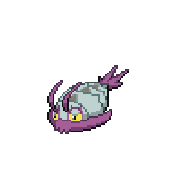
Wimpod, Level 8 |
Bug | Struggle Bug |
|---|---|---|
| Sand Attack | ||
| Water | --- | |
| --- | ||
|
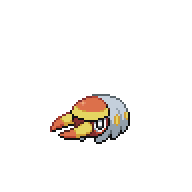
Grubbin, Level 9 |
Bug | Vice Grip |
| Mud-Slap | ||
| String Shot | ||
| --- | ||
|
Reward: 45
|
||
After the battle, you'll see a cutscene and be introduced to Karen. She'll deal with the thugs, and the Starly will return to its owner. Go back and talk to the girl in Gearen Lab, and then you can collect your
300 reward at the Help Plaza.
Help Plaza Quest 2: Missing Mother

Once you accepted this request, you'll need to head over to the Salon in the Shopping Emporium
 and talk to Sasha inside. She'll explain that her mom has been missing for a while now, and wants you to track down her clients to see if they know where her mom, Rosa, went. The first client is on the second floor of Aqua Building,
and talk to Sasha inside. She'll explain that her mom has been missing for a while now, and wants you to track down her clients to see if they know where her mom, Rosa, went. The first client is on the second floor of Aqua Building, which is just below the Shopping Emporium. Go back and report to Sasha, and she'll send you to the third floor of Velvet Building
which is just below the Shopping Emporium. Go back and report to Sasha, and she'll send you to the third floor of Velvet Building near Gearen Lab. Go back once more to Sasha, and then head over to the ground floor of Violet Building
near Gearen Lab. Go back once more to Sasha, and then head over to the ground floor of Violet Building all the way on the left. After you leave Violet building, take to the woman right next to the entrance,
all the way on the left. After you leave Violet building, take to the woman right next to the entrance, who will let you know that they saw Rosa by Oceana Pier. Go back to Sasha one last time, and then the two of you will go to Oceana Pier. Follow Sasha in, watch the cutscene, and the request will be complete. You can get your rewards from the Help Plaza, and head to the Salon for the other reward.
who will let you know that they saw Rosa by Oceana Pier. Go back to Sasha one last time, and then the two of you will go to Oceana Pier. Follow Sasha in, watch the cutscene, and the request will be complete. You can get your rewards from the Help Plaza, and head to the Salon for the other reward.
As a result of this request, you'll be able to give haircuts once a day to your Pokemon, which will raise their friendship. The first one is free, after which you will need to pay
1500. The lady on the bottom right of the Salon will also let you know your Pokemon's friendship levels.
Help Plaza Quest 3: Hidden Library

The requester for this sidequest can be found in Gearen Lab. Head to the small reading area on the left side, and talk to this backpacker
 . He'll talk a little about the Hidden Library, and asks you to find more information from three individuals. The first is the woman with her child in leaflet park,
. He'll talk a little about the Hidden Library, and asks you to find more information from three individuals. The first is the woman with her child in leaflet park, then the receptionist in Chrisola Hotel, and finally Karrina, the local gang leader. Karrina can be found at the end of the pathway near the sewers.
then the receptionist in Chrisola Hotel, and finally Karrina, the local gang leader. Karrina can be found at the end of the pathway near the sewers.
Once you're done, head back to the backpacker in Gearen Lab. He'll ask you what you found, so let him know that:
The library is intact.
The library is closed off.
Gearen Sewers.
Once all the information is relayed, the request will be complete, so you can get your reward of Great Balls from the Help Plaza.
Help Plaza Quest 4: Love Letter

Once you've accepted the request, head over to Oceana Pier Gate where you had your Trainer Card verified. In there, head up to the second floor
 to meet with the requester. He'll show you Cameron,
to meet with the requester. He'll show you Cameron, who you'll need to deliver the letter too. He'll also ask you to buy an item to give to Cameron, something that will help against Fire types. Head over to Gearen Market, and buy a Burn Heal from the bottom left stall. You can find Cameron just around the corner.
who you'll need to deliver the letter too. He'll also ask you to buy an item to give to Cameron, something that will help against Fire types. Head over to Gearen Market, and buy a Burn Heal from the bottom left stall. You can find Cameron just around the corner. Once you've given him the item, head back to Oceana Pier Gate to report your success, then go get your monetary reward along with a Nugget, which you can sell for even more money.
Once you've given him the item, head back to Oceana Pier Gate to report your success, then go get your monetary reward along with a Nugget, which you can sell for even more money.
Help Plaza Quest 5: Dangerous Pokemon

This request doesn't have a requester, so you can immediately head over to Oceana Pier. Once you exited the gate, head over to the right side where you'll see a group of Litleos. As the Litleos approach you, something will happen and you'll be thrown into a battle.

Poke Gang Lion Troupe
|
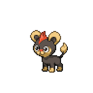
Litleo, Level 15 |
Fire | Headbutt |
|---|---|---|
| Ember | ||
| Work Up | ||
| Noble Roar | ||
|
Litleo, Level 15 |
Fire | Headbutt |
| Ember | ||
| Work Up | ||
| Noble Roar | ||
|
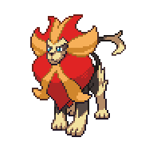
Pyroar, Level 25 |
Fire | Fire Fang |
| Headbutt | ||
| Take Down | ||
| Noble Roar |
While the Pyroar's level is higher than our current limit, the fact that it always rains in Oceana Pier makes this battle a bit easier. Water type moves are boosted, and Litleo/Pyroar's Fire moves have much lower effectiveness. Take down the two Litleos first to turn the fight into a 2v1, and from there whittle down the Pyroar. Once you defeat the group, one of the Litleo's will forcibly join you. The request will be complete, so you can get your reward at the Help Plaza.
Help Plaza Quest 6: Battle Me

This is a battle request, and it will take place in Chrisola Hotel. Head over to the Hotel and up to the third floor, where your opponent is waiting. Feel free to use the Healing Machine here if you need to, then talk to the person on the battlefield to start the battle.

Wanderer Novae
|
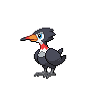
Trumbeak, Level 16 |
Normal | Pluck |
|---|---|---|
| Fury Attack | ||
| Flying | Rock Smash | |
| Supersonic | ||
|
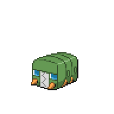
Charjabug, Level 17 |
Bug | Spark |
| Bug Bite | ||
| Electric | Bite | |
| Mud-Slap | ||
|
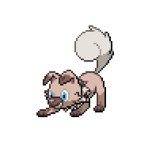
Rockruff, Level 17 |
Rock | Rock Throw |
| Bite | ||
| Leer | ||
| Sand Attack | ||
|
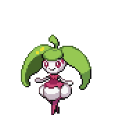
Steenee, Level 18 |
Grass | Razor Leaf |
| Play Rough | ||
| Doubleslap | ||
| Synthesis | ||
|
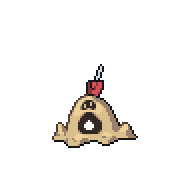
Sandygast, Level 18 |
Ghost | Sand Tomb |
| Mega Drain | ||
| Ground | Astonish | |
| Sand Attack | ||
|
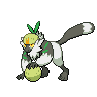
Passimian, Level 20 |
Fighting | Rock Smash |
| Smack Down | ||
| Tackle | ||
| --- | ||
|
Reward: 360
|
||
Once you beat her, Novae will give you her regards and will leave. You can go ahead and heal at the Healing Station, then go back to the Help Plaza to get the cash reward and also a Pichu.
Nidoran (F) Chase

Once you interact with the Nidoran (F), it'll run away to a different location. You'll have to repeat this a few times. It'll first run off to the top left, by the station.
 After that, you can find it on along the right side road, hiding behind a dumpster.
After that, you can find it on along the right side road, hiding behind a dumpster. Finally, it'll run over to the platform leading to the Help Plaza.
Finally, it'll run over to the platform leading to the Help Plaza. Once you get it there, it will be cornered and will battle you once you interact with it.
Once you get it there, it will be cornered and will battle you once you interact with it.
Minccino Chase

To start this chase, you'll need to start at Chrisola Hotel, at the second room in the right hallway. As you enter it, Mincinno will bump into you as it runs out of the room. The old lady will ask you to help her capture it. You'll first find it in the lobby, by the elevators.
 It'll then run off to the left hallway,
It'll then run off to the left hallway, then chase after it up the hall. You'll see it get captured by two Xen Grunts. They'll run off to Gearen Park. So chase after them and find them in the top right corner of the park. They'll strike a pose, then challenge you to a double battle.
then chase after it up the hall. You'll see it get captured by two Xen Grunts. They'll run off to Gearen Park. So chase after them and find them in the top right corner of the park. They'll strike a pose, then challenge you to a double battle.

Team Xen Wilbur and Team Xen Hayleigh
|
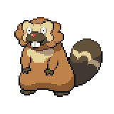
Bibarel, Level 17 |
Normal | Headbutt |
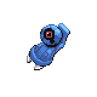
Beldum, Level 17 |
Steel | Take Down |
|---|---|---|---|---|---|
| Rollout | --- | ||||
| Water | Defense Curl | Psychic | --- | ||
| Growl | --- | ||||
|
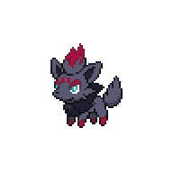
Zorua, Level 18 |
Dark | Feint Attack |
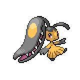
Mawile, Level 18 |
Steel | Vice Grip |
| Fury Swipes | Bite | ||||
| Pursuit | Fairy | Sweet Scent | |||
| Fake Tears | Fake Tears | ||||
|
Reward: 72
|
|||||
They do have high leveled Pokemon, but this shouldn't be anything too threatening. Beldum and Bibarel won't do much, and neither will Zorua. Mawile is very tanky at this point, so it might take some time to end the battle. Each of them also have a Super Potion that they will use, extending the fight even more.
Once you defeat them, they'll release the Minccino and escape. The Minccino will go back to the old lady, and the old lady will give you permission to battle and catch it, so do that if you want.
Sidequests Complete
We've done all the side activities available at this point in the game. Prepare your team to face Venam, you can go to Route 1 to grind if you want. Either way, when you're ready head on over to the gym.<< East Gearen City - Second Visit East Gearaen City Gym >>
×

Oceana Pier
×

East Gearen City (Left)
×

East Gearen City (Right)
×

Gearen Park